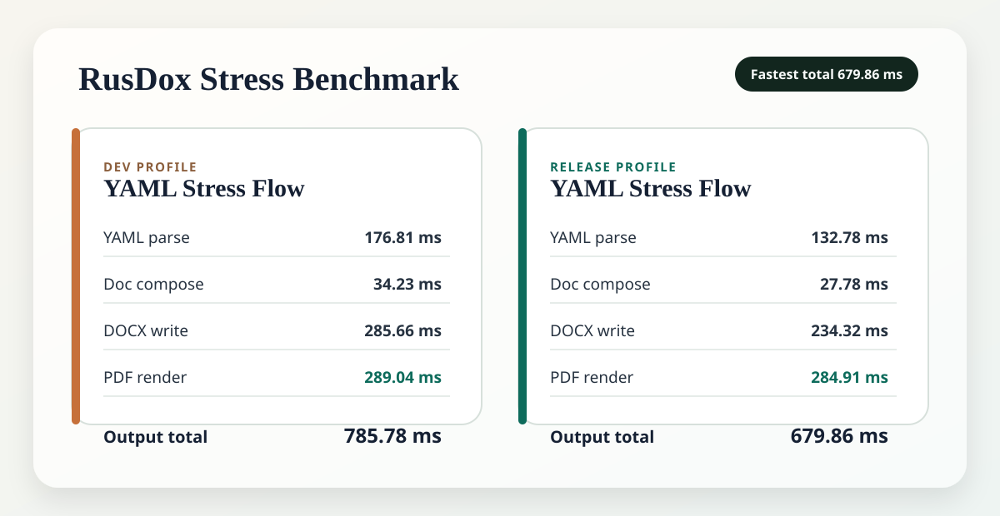

Template of the month
Board and Compliance Report
A landscape board packet with repeated scorecard rows, conditional risk narrative, a visible footer, and verified parity evidence.
Browse verified templatesProgrammatic document generation at Rust speed
RusDox is a pure Rust engine for creating Word and PDF files programmatically. It turns YAML into large reports, dashboards, proposals, invoices, and internal document packs without Microsoft Word, LibreOffice, or slow office conversions.
Signed template registry
Browse curated invoices, proposals, reports, and compliance packs. Every entry includes its author, license, inputs, accessibility notes, output hashes, and inspectable DOCX/PDF parity evidence.
Template of the month
A landscape board packet with repeated scorecard rows, conditional risk narrative, a visible footer, and verified parity evidence.
Browse verified templatesInstall after verification
rusdox template add board-report
Install in 10 seconds
curl -fsSL https://raw.githubusercontent.com/OthmaneBlial/rusdox/main/scripts/install.sh | sh
Why teams use it
RusDox is useful when documents are too important to build manually and too large or too frequent for slow office-based pipelines.
Executive reporting
Generate leadership documents quickly enough to keep them in regular automation flows instead of turning them into manual formatting work.
Client document automation
Keep formatting consistent across customer deliverables while generating both Word and PDF from the same structured source.
High-volume internal generation
Use Rust speed where document size and generation frequency make slower stacks painful in CI, backend jobs, and internal tooling.
Documentation and API
Read the authoring model, configuration, CLI surface, examples, and Rust API in one place.
Documentation workspace
Browse getting started, YAML blocks, configuration, CLI usage, examples, Rust API guidance, and the community pages in one focused reading surface.
Go to docsKey reading
How it stays usable
Titles, paragraphs, bullets, metrics, and tables are declared top to bottom in YAML so the source reads like the document.
blocks:
- type: title
text: Weekly Brief
- type: body
text: Pipeline grew 14% week over week.Typography, spacing, colors, output folders, and PDF behavior stay in config instead of being repeated in every file.
Start with the CLI. Move to `DocumentSpec`, `Studio`, or the low-level document model only when the content becomes dynamic or highly custom.
Examples
The cards below link directly to the YAML specs, DOCX files, and PDF previews.
Contributor field guide
Ten maintained starter tasks remove the archaeology from a first pull request. Each issue points to a checked-in fixture, an isolated preparation command, and the evidence needed for review.
Start small
Protocol, registry, documentation, and Windows integration tasks are ready to claim.
Open starter issuesKnow the path
The architecture map shows where validation, OOXML, native PDF, parity, and adapters meet.
Read the architectureEarn visible credit
Meaningful merged work is credited in the contributor ledger, site, and relevant release notes.
Meet contributorsBenchmark

Reproduce it with `scripts/generate_stress_yaml.sh` and `scripts/run_stress_yaml.sh --release`.
Open performance budgets